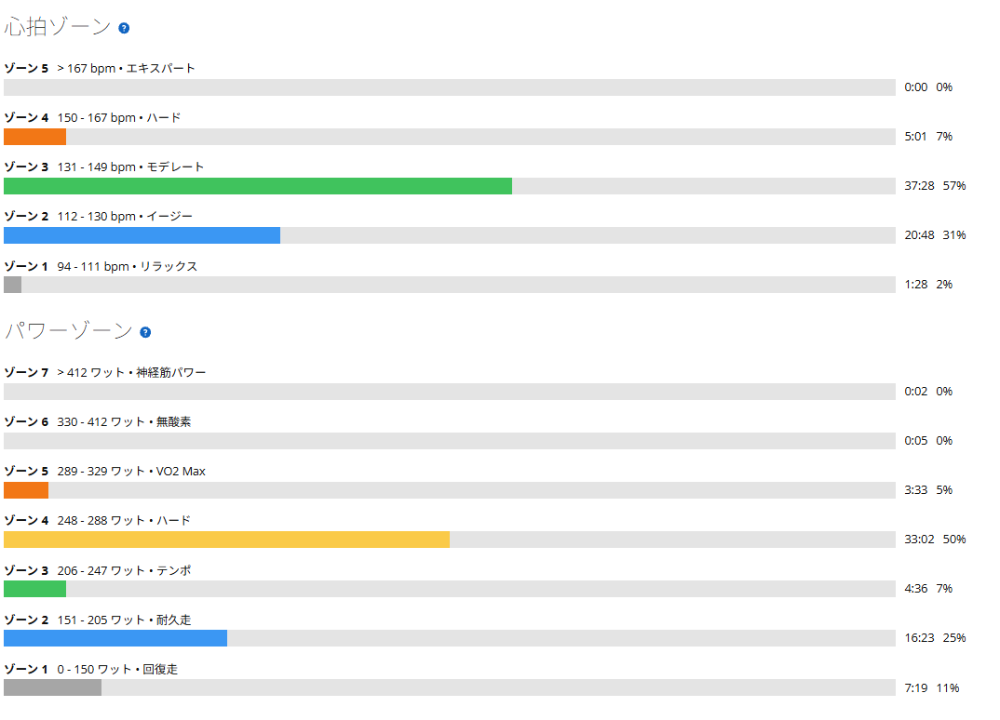

ローラーSST。前より楽に出せたけど、今日は調子に乗らず終わる
今日はローラーでSST。明日は近沢峠方面を走る予定なので、最初から長くやるつもりはなく、20分を2本だけと決めていた。バイクはANCHOR RNC7、ローラーはGT-ROLLER Q1.1。設定は250〜255Wくらいのつもりだった。ところが、実際に始めてみると思っていたより脚が動いた。

約65分・NP242W・TSS83
- 全体34.42km / 1時間05分02秒 / 平均気温26.3℃ / 運動量887kJ
- 負荷平均227W / NP242W / IF0.881 / TSS83.4 / 20分最大268W
- 心拍・回転平均136bpm / 最大152bpm / 平均82rpm
- 1本目20分 / 263W / 心拍平均143bpm・最大151bpm / 82rpm
- 2本目20分 / 268W / 心拍平均147bpm・最大152bpm / 81rpm
1本目から、予定していた250〜255Wより少し高め。無理に上げたというより、自然にこのくらいで回せた。2本目はさらに少し上がって268W。普通なら2本目の方がきつく感じやすいところだが、今日はそこまで崩れなかった。心拍も143bpmから147bpmで、出力が上がった分だけ自然に上がった感じである。

過去のSSTと並べてみた
- 9月11日252W・140bpm / 253W・149bpm / 260W・152bpm
- 9月24日250W・136bpm / 252W・140bpm / 273W・149bpm
- 10月10日240W・135bpm / 252W・139bpm / 262W・144bpm
- 今日263W・143bpm / 268W・147bpm（2本で終了）
1本目の263Wは、これまでのSSTの1本目（最高でも8月12日の259W）より高い。2本目の268Wも、2本目としてはいちばん高い。……と書くと最高記録っぽいが、9月24日の3本目に273W・149bpmがあるので、SSTの最高ではない。調子に乗る前に自分で止めておく。
数字より「あれ、楽だな」が印象に残った
今日いちばん印象に残ったのは、数字よりも主観だった。263W、268Wは、今までならもう少ししっかり構えて乗る出力である。以前なら「頑張っている感」がもっと強かった気がする。でも今日は「あれ、前より楽だな」という感覚があった。
今日はたまたま調子が良かっただけかもしれない。ただ、今日という1日だけ見れば、以前より余裕を持って同じくらいの強度を出せたのは確かである。
調子のいい日に、全部使い切らない
今日は脚の感じが良かったので、その気になればもう少しやれたと思う。3本目を追加することもできたかもしれない。でも、今日はそこで終わり。理由は単純で、ここで調子に乗ると明日が大変になると思ったからである。
今日の目的は、SSTで刺激を入れること。今日だけで全部出し切ることではない。調子がいい日に、そのまま全部使い切らない。最近はこういう判断も少しずつ大事だと思うようになった。次回は260W前後から入り、1本目が楽なら2本目を265〜270Wまで上げてみる。ただ、今日がたまたま良かった可能性もあるので「260W固定」とはまだ決めない。強度を上げるかどうかは、次に乗ったときにまた決めればいい。今日は「前より少し余裕が出てきたかもしれない」、その確認ができただけで十分である。
次に見るポイント
- 次のSST260W前後から入り、楽なら2本目を265〜270Wにする。固定はしない
- 主観今日の「楽だった」が、別の日にも再現できるか
- 明日の実走2本で止めた脚が、近沢峠方面でどう残っているか